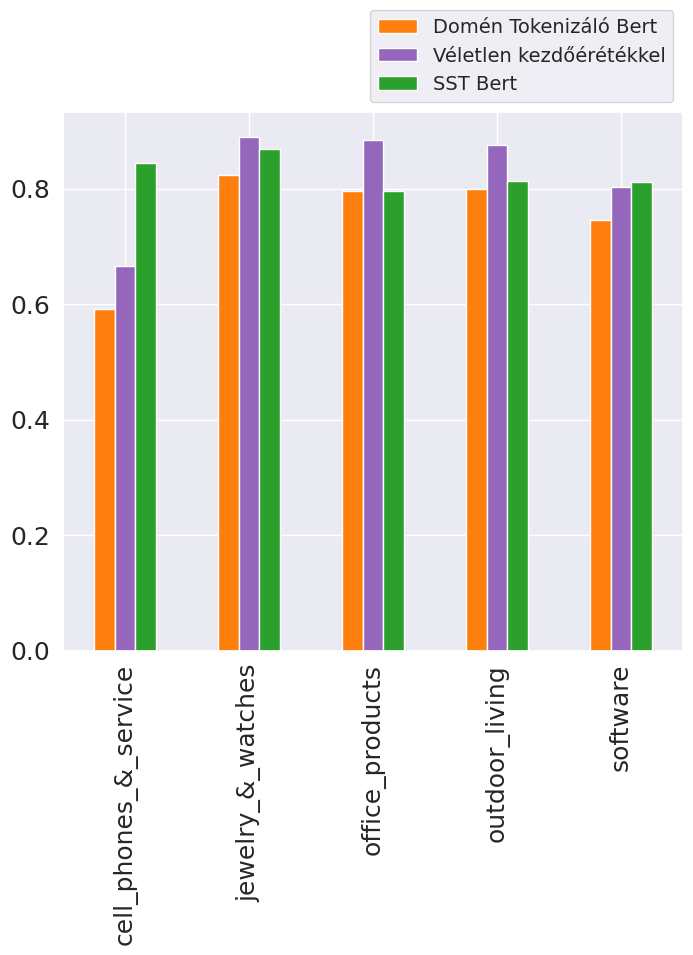
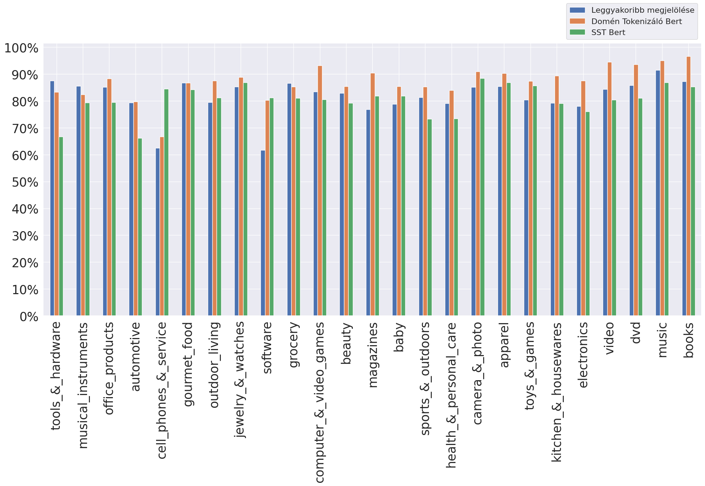
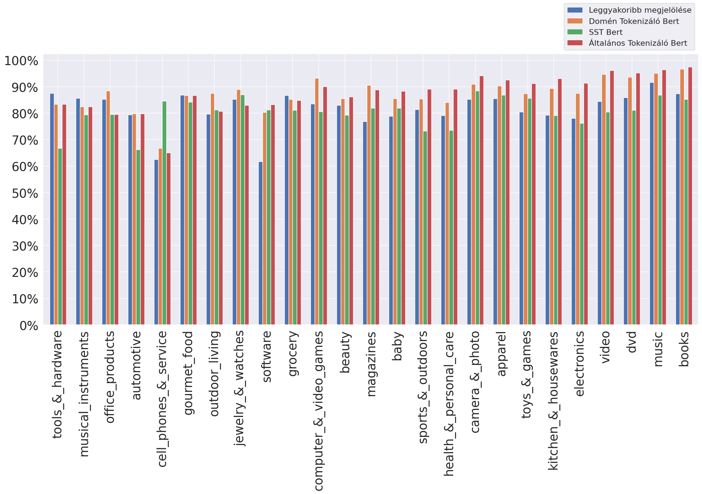

A domén specifikus modellek a 25 doménből 20 domén esetén jobb eredményt értek el saját doménjeiken, mint a Stanford Sentiment Treebank-en tanított BERT (SST BERT) modell. Átlagosan 5 százalékpontos javulás figyelhető meg. A legkisebb javulás a játékokról szóló doménen volt, ahol az új tokenizálóval rendelkező modell csak 1,75 százalékponttal teljesített jobban, mint az SST BERT modell. A legnagyobb javulás a legkisebb doménnél látható, ahol 16,7 százalékpontos növekedést hozott az új szótár kialakítása. Ezzel szemben a legrosszabb eredmény a telefonokról szóló doménen volt, ahol az SST BERT modell teljesítménye 25 százalékponttal volt magasabb a domén specifikus modellénél. Ezen kívül voltak még domének, ahol nem sikerült az SST BERT modellnél jobb eredményt elérni, de a telefonokról szóló doménhez képest ezek csak 6 vagy kevesebb százalékponttal maradtak le az SST BERT-hez képest. Az irodai termékek domén esetében az eredmény teljesen megegyező volt.
| Megnevezés | Érték | Domén |
|---|---|---|
| Domének száma | 25 db | - |
| Átlagos javulás | 5,25 százalékpont | - |
| Medián javulás | 6,23 százalékpont | - |
| Legkisebb javulás | 1,75 százalékpont | Toys & Games |
| Legnagyobb javulás | 16,7 százalékpont | Tools & Hardware |
Az öt rosszabb eredmény több okból is kialakulhatott például a tanító adatok minősége, az adatok mennyisége, vagy akár még a használt hiperparaméterek is befolyásolhatták őket. Az öt domén esetén, ahol rosszabb eredményt értek el a domén specifikus modellek további kísérleteket hajtottam végre a hiperparaméterekre irányulóan. Ahogy korábbi irodalmakban is olvashatjuk a tanító adatok véletlen összekeverésének megváltoztatásával is jelentős teljesítmény különbségek mutathatók ki. Ennek megfelelően a kérdéses öt doménre 10 alkalommal újra tanítottam a modelleket a korábban beállított 10-es érték helyett másik véletlen kezdőértékekkel. Ezzel a módszerrel a korábbiakhoz képest mind az öt doménen néhány százalékponttal jobb eredményeket értek el a modellek. Ezekkel a javulásokkal még három doménen jobban tudtak teljesíteni a modellek az SST BERT-hez képest. A két domén, amin nem sikerült jobb eredményt elérnem az SST BERT-hez képest a telefonokról, illetve a szoftverekről szóló domének voltak. A telefonokkal kapcsolatos témakörben nagyobb lemaradás látható még mindig, viszont a szoftver témakörben nagyon kicsi a különbség és a megfelelő kezdő értékkel valószínűleg ebben a doménben is jobban teljesítene az új modell.
Az eredetileg rosszabb domének javított eredményeivel azt láthatjuk, hogy a doménspecifikus tokenizálók létrehozásával a 25 doménből 23-on jobb eredményt sikerült elérni, az egyik viszonyítási értékhez képest. (11. ábra) Viszont ahhoz, hogy következtetést lehessen levonni az eredményekből előbb össze kell hasonlítani a másik bázis értékkel is.
A domén specifikus modellek a standard finomhangoláson átesett modellekhez képest 11 doménen egyenlően, vagy jobban teljesítettek és 14 doménen valamennyivel rosszabbul. A jobban és rosszabbul teljesítő domének mennyisége nem tükrözi teljesen, az elért eredményeket, mivel az új modellek átlagolva 0.3 százalékponttal maradtak csak le az általános finomhangoláshoz képest. Az eredmények közti különbségek mediánja az átlagnál kicsit jobban, 0.7 százalékponttal kedvez a standard módon finomhangolt modelleknek. A hangszerekről, az eszközök és gépekről, az ételekről és a gépjárművekről szóló doméneken megegyezőek volt a modellek eredményei. A legnagyobb különbség az irodai eszközök témakörben volt, ahol a domén specifikus tokenizálóval rendelkező modell 8 százalékponttal jobban teljesített. A standard módon finomhangolt modellek legnagyobb előnye az egészség és testápolás doménen volt. Ezen a doménen a domén specifikus tokenizálóval 83.9%-os pontosságot ért el a BERT modell, míg az általánosan finomhangolt modell 89%-os pontosságot tudott elérni.
| Megnevezés | Érték | doménspecifikus / Standard modell |
|---|---|---|
| Domének száma | 25 db | 11 / 14 |
| Átlagos különbség | 0,3 százalékpont | Standard |
| Medián különbség | 0,7 százalékpont | Standard |
| Legnagyobb különbség | 8,8 százalékpont | Doménspecifikus Office Products |
| Legnagyobb különbség | 5,1 százalékpont | Standard Health & Personal Care |
A következő ábrán látható az összes bázis érték és elért eredmények összehasonlítása. Ebből a korábbiakhoz képest azt is láthatjuk, hogy a tanító adatok növekedésével a domén specifikus tokenizálóval készített és általánosan finomhangolt BERT modellek eredményei együtt növekednek. Azok a domének amelyikeken egyenlő vagy jobb eredményeket sikerült elérni az új tokenizálókkal mind a kisebb domének közé tartoznak. Nagyjából 4000 tanító példa felett a standard finomhangolás jobb eredményeket hozott, de a már így is viszonylag kicsi különbségeket valószínűleg a korábban is használt módszerrel még tovább lehetne csökkenteni. A telefonokról szóló doménen továbbra is az SST BERT adta a legjobb eredményt, de ez a domén egyike azoknak, ahol az általános tokenizálóval rendelkező BERT modellnél, jobb eredményt lehetett elérni a domén specifikus tokenizálóval.
